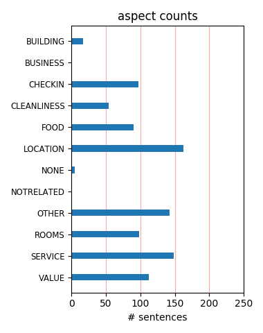
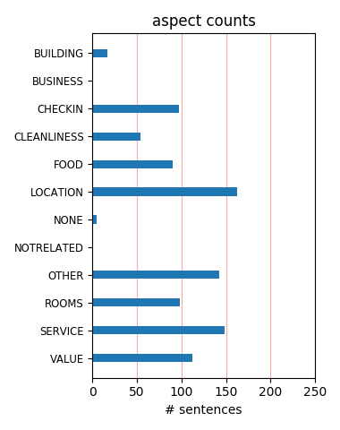

you cant beat the place close to everything clean and great customer service. we got there early and were able to check in with an upgrade to a 2 rooms. breakfast was awesome and plenty....we will stay there again for sure. thanks to Dada he was great
My wife and I stayed here for 4 nights in March 2011. We arrived after being in transit for 40 hours and were thoroughly looked after on arrival. The hospitality at this hotel is amazing and such a great location, only 5 mins walk from the French qtr.
This is a great location to Bourbon Steet and the French Quarter. The staff was very nice. The breakfast was average. Rooms were clean but the beds were lumpy due to mattress pads that had seen better days. Overall this hotel was a great deal for the money.
The customer service was exceptional. It is an older hotel but in very good condition with lots of charm & character. We were upgraded to a mini suite which was on the corner with a great view of the bustling downtown area. We walked to French Quarter & Riverwalk.
Great location. The hotel is old but that for the price, I wasn't expecting a lot. I was pleasantly surprised. The bed was comfortable, clean, bathroom spotless. The staff was extremely friendly, helpful and made us feel very welcome. I would recommend this hotel.
We stayed here based on tripadvisor recommendations and they were quite accurate. There was a mix up with our room so they bent over backwards to fix it. I am a clean freak but this older hotel suited me just fine. Beware of the $17 parking fee though. Overall a great rate for a great location.
We thoroughly enjoyed our stay - nobody claims this to be a 5 star hotel - but the service lifts it above its relatively humble origins to provide an enjoyable, convenient, clean and comfortable stay. We really appreciated the friendly and helpful service and would definitely recommend staying here.
I can't say enough about the great staff at Quality Inn. Everyone was so friendly and went out of their way to help us secure cabs several times....not an easy task during Mardi Gras parades. Room was clean and he location is great ..........you just can't beat the price. Would absolutely stay again.
for an affordable, comfortable stay i would recommend this hotel,the staff make all the difference and though this is an older city hotel they went out of their way to accommodate us. i would recommend it to anyone and their comp breakfast included waffles and eggs, quite a suprise. great folk,great staythanks!!!
This is the best Quality Inn I've ever stayed at. Amazing location, nice rooms, good breakfast, but the staff is the key. I've stayed at 4-5 star hotels that couldn't match this staffs attentiveness, friendliness and overall good character. Whoever's in charge of the HR, you should be commended. This is how every hotel should be run.
Not fancy, but a good value. My room actually had no window which was a little strange and somewhat disconcerting, so you may wish to ask about that when you check in. But the staff were very helpful and went out of their way to improve my stay. When I complained about the small pillows, they bought me a new, bigger one still in the bag.
This hotel was recommended by a coworker who frequently travels. I wanted to find a place in New Orleans where I would not get taken for a ride. From the minute we arrived Mr. Art was wonderful, honest, and took the time to make recommendations. The hotel is a short walk to Bourbon Street via Canal and just also within walking distance to Harrah's.
Only 2.5 star rated Hotel but with such accomodating staff, clean rooms and away from Bourban Street - it's a very good place to stay. A free breakfast with room, Checking in early was no problem and we even got a room upgrade to a suite. Once again thanks to Stanley and his team - this was real service, not the pretend stuff you often get in Hotels!
The location of this hotel is excellent (far enough away from the partying but close enough to the partying!) and the staff are super-friendly and always willing to help in any way. We stayed in a fantastic room (suite) and it was very quiet. We got a perfect night's sleep every night. The room was clean and comfy. Would definitely stay here again and would recommend to others.
We chose this hotel based on the reviews and ranking on this site. It wasn't as close to the French Quarter as I had hoped. The room had an odor in which there was an air purifier going when we entered the room. Soon after, someone came in and removed it. The sink was stopped up and the water drained VERY slowly. The staff was great and very helpful and the breakfast was a plus.
We have stayed at this hotel 3 times now and were pleased each time. Each time the front desk staff have been helpful and pleasant. The rooms have all been clean and well equipped. The free breakfast is varied and quite complete. And the distance to the French Quarter is close enough to easily walk, but far enough to be quiet. We would recommend it to anyone traveling to New Orleans.
The manager here is friendly and very attentive. He remembers customers by their first names - makes you feel right at home! The staff is very friendly and professional as well. This hotel is very conveniently located to the St. Charles streetcar, Harrah's and the french Quarter. The room was very spacious compared to the small room in the upscale hotel I stayed at in the French Quarter for business.
A very good alternative to the more upscale 4-star hotels. In addition to reasonable rates, you get free hot breakfast buffet, free internet, free local phone calls, reasonably priced garage (catty corner), a location that is a reasonable walking distance from the French Quarter and downtown attractions, and an excellent and friendly staff. This is an ideal place for a New Orleans visit, business or leisure.
We found this hotel through tripadvisor, and the reviews did not let us down. A great value and the most incredibly friendly and help staff we have found in any hotel on our trip. The full breakfast was plentiful and tasty. The hotel was quiet, and just a block from the French quarter. If you are driving, make sure to ask about the secure parking available (for an extra fee) across the street from the hotel.
Obviously, this motel is a great place. I just wanted to add that the front desk folks are the best I've ever encountered. We needed to store our luggage the morning of our check in and it was not a problem whatsoever. Mr. Stanley, as mentioned, is super friendly. The location isn't in a shady area as a previous poster claimed. We felt perfectly safe walking back from the Vampire tour we took in the French Quarter! :)
I recently shared a room with a friend during our recent attendance at a meeting in New Orleans.The staff was exceptionally friendly and helpful.. The breakfast was very good.; the rooms were clean. We were given a room with almost separate queen beds.Each "room" had its own TV., And the location 3 blooks from the French quarter couldn't be better. The convention center is about a mile away, but that makes for a nice brisk morning walk
We stayed here in reliance on TA reviews, which have been quite accurate in the past all over the world. Prepared for a charming, homey place, we immediately knew we had chosen badly when we saw exterior and lobby. Tacky and shabby. Maybe OK for a business traveler on a budget. Breakfast was dismal, with boxed cereal and some yoghurt. Bad location for anything but business. Manager was very nice and quite helpful. Internet was free and worked well.
I searched and searched for hotels in new orleans, and after booking and canceling 2 hotels after reading the reviews on trip advisor. I read the great reviews on Quality Inn and Suites and decided to book there. The ratings were dead on the staff was friendly and treated you as if you were in a 5 star resort. the rooms were clean and comfortable, parking was only $15 per night 1/2 block away. location was close to everything. it was a great stay. will stay again.
we only stay for 2 nights,but would love to stay again. the service was great,could use wi fi in the rooms, the room size was prefect, the bed could have been pillow top, but we slept fine. parking was close by, breakfast was good,the room was very clean and seem to be updated. call the hotel itself and was able to get discount on room and parking. this was r first time in New Orleans and would love to come back for a longer visit. if you going to New Orleans a must stay.
We've stayed here the past couple of Mardi Gras. The rooms are comfortable, clean and quiet. The breakfast is exceptional for the price of the room. Once they meet you, the staff remembers you forever! Am writing this review late,(January 2011) because we recently stayed at an upscale hotel in NO and it paled in comparison. Upscale was not nearly as comfortable, nor was the service as good--and no breakfast included. Hope to stay at Quality Inn New Orleans again this year.
We stayed one night at the Quality Inn in downtown New Orleans and were extremely pleased. The staff was very accommodating and friendly and went above and beyond with everything. The parking was reasonable and they also gave discount vouchers. The rooms were modern, clean and the beds were very comfortable! Our room was a little small but it was still ok for us. We also had a mini fridge and a kitchen sink. They also had hot breakfast from 6:30 am- 9:30 am. The location was also nice.
I was here on business that also fell during the annual Voodoo festival at Halloween. Despite all of the craziness in town the hotel staff was super. They went all out to make sure that my stay was comfortable and provided all the information that I needed to get around town. The location was only about three blocks off of Bourbon St. and close enough that I walked everywhere. Business at the conference center and meals in the quarter were all an easy walk. I would stay here again with out question.
Stayed one night....liked our room, breakfast, and location of the hotel. We stayed out late, and felt safe walking back to our hotel from Bourbon Street. The staff was friendly and very helpful in giving us directions to different places we wanted to visit. Although we weren't in town long enough to use it, there is a Subway restaurant connected to the hotel. Parking was also convenient (parking structure 1/2 block away with valet service). The hotel as well as the area was not busy during our stay.
This hotel is good. First of all, good affordable price. The staff is so friendly that they help you in everything-upgrades of rooms, parking, directions to tourist places, conventions centers, restaurants, internet connection, keeping luggage safe, what else you want. I would say that in this country, I have never seen such helping and good staff anywhere in any hotel. No doubt this hotel is number one in New Orleans. Also it is pretty safe and walkable to all the important conference venues and tourist places.
Nice hotel in a nice location. Very close from the town action and from the street car stops. Breakfast was OK, taking into account that was included in the price (we've paid 80$/night). After staying the first night in a room just besides the elevator, on next day we were moved to a more distant room to avoid the elevator's noise. Stanley, as already mentioned, is very helpful and very friendly and the 5th point is entirely for him (otherwise I would have rated as a 4)! We'd definetely go back if we go again to New Orleans.
This is a nice property located two blocks from the French Quarter. It has the amenities one expects from this chain - clean secure rooms at reasonable prices, comfortable beds. The complimentary breakfast is better than usual for a Comfort property. What set the place apart for me was the extraordinary staff. They were always friendly and helpful, without being intrusive. When we arrived they gave us walking directions for the places we wanted to see, along with tips to help assure our safety. The people here were.... great.
I didn't catch the front desk receptionist's name but he was amazing! He let us check in early and even upgraded our queen room to a king when he saw that I was traveling with my rather tall boyfriend :) and even apologized for the room not being too roomy so he made our parking complimentary. He was so eager to suggest places to dine and where the great jazz music is performed. We had a fantastic stay! The customer service was really refreshing since we didn't get much great service from around that area. Would definitely stay again!
I, being a member of the working class, know what it means to get a "job well done" from bosses and clients. I want to give one to Mr. Stanley Mascair, CHA, General Manager and staff. I've stayed in hotels and motels before and the service was adequate to bad. Mr. Mascair treated my wife and I like we were the only people in his hotel. The rooms are nice, comfortable and clean. Convenient parking and close to all the main reasons you visit New Orleans. Even if it isn't the most convenient location for future visits, we will stay there!
Short walk will get you to all the action, and even walking distance to the stadium. We went for a football game and when they found out at checkin that we were cheers for the Saints, they upgraded our room - nice! One block away is a convenience store. Room has a fridge so you can stock up on some items for the trip. We only paid about 100/night, never needed a cab, breakfast was included and front desk was super friendly - can't go wrong! Would recommend to anyone. Fancy -no, but in New Orleans, who is hanging out at the hotel anyways??
Just two blocks from the edge of the French Quarter. A quick 5 min walk. No need for a car. Room was nice and clean. Bathroom looked to have been recently remodeled. Good water pressure. Got a free upgrade to a small suite. Breakfast okay but certainly nothing fancy. Best part was the friendliness and helpfulness of the staff. Must have interacted with 5 or 6 different staff members and they were all great. Helped us with advice, directions and the exchanging of bicycles we rented from a third party for the day. They were very helpful and accommodating.
Arrived off ship late morning for a 2day stay of new Orleans. Offered us our rooms if we wanted to wait 25 min. Upgraded us to King Size. Very friendly front desk staff. Continental breakfast excellent even included scrambled eggs, sausage and waffles. Staff in the dining room very efficient and personable. Location to Bourbon St. very close by as further into the French Quarter about a 10 min. walk. Hotel is older and not modern but had a lovely upgraded bathroom. It is not a luxury hotel but if looking for a comfortable place to stay we all enjoyed it.
This hotel is in a great location, it’s within walking distance of pretty much everything you'd want to visit in New Orleans. The desk staff and housekeepers are unbelievably helpful and friendly. They're a great resource for finding excellent places to eat and the best/safest places to tour. Although the rooms and hallways seem in need of an update everything was very clean and comfortable. The breakfasts were probably the best I've had at a Quality Inn and are a bit more extensive than the typical doughnut and cereal continental breakfasts you usually get.
My wife and I drove from Tampa, Florida to spend five days with my brother-in-law who flew in from Boston. I saw the #2 rating on Trip Advisor and read the testimonials. Very accurate high rating. These folks can't do enough for you. The beds were very comfortable. They match or exceed the bedding in some of the fancier places I've stayed in. The hotel is very clean. Location is really handy to everything. You can walk to the French Quarter. It's very close to the trolley as well. The parking rate was cheaper than the other hotels I checked out. What a GREAT VALUE!
We stayed at the Quality Inn for 3 nights and it was excellent in every way! The reviews we read on TripAdvisor were accurate. Our room on the 3rd floor was nice and a good value for the price. The location was perfect - 2 blocks from the French Quarter and the streetcar line. The General Manager, Stanley Mascair, and Janell at the front desk, took care of us personally with info. about the city and recommendations and maps for sightseeing. The breakfast is very good and was more than just continental. There were eggs, sausage and grits in addition to the usual waffles, cereal, fruit, etc.
We had four nights hear and really loved the place. Highlights include the buffet breakfast (hot and cold food, including a fantastic waffle maker) and the really helpful staff who helped us with some itinerary problems we were facing. The location was fantastic because it wasn't right in the French Quarter, but was only a short 5 minute walk to Bourbon Street and all the craziness that exists there. It was great to get away from the noise when we wanted to sleep. The room was huge and had two TV's and a mini kitchenette and a lounge room. The place was more like an apartment that a hotel room.
WOW, The most amazing service, made me feel that I stayed in a 5 star hotel or better! Stanley, the manager, greeted us and remembered our names for the rest of the stay. He took care of us and really made everything to make sure our stay was excellente. The room was clean, big and very nice. Perfect location and we felt very safe walking home(about 10 minutes) from the French district at night. We enjoyed our stay so much we decided to extend our stay. Thank you Quality Inn and Stanley for a lovely time in Nola. ( A lot of hotel could learn a lot from this one when it comes to customer service).
This hotel deserves its number one ranking and it is a credit to the manager and his hard working team. The location is very good, walking distance to all major sights in French quarter, the rooms were a good size and very clean, but what makes this place is the staff. Very personal service, we were upgraded to a queen suite which was a nice surprise. The staff were only too happy to talk about the city of new orleans, with tips on where to go, best resturants etc.. We booked a swamp tour through the hotel which was great. The best advice was to head to Frenchman st and avoid Bourbon to see the real NO nightlife. Highly reccommend
The manager, Mr. Stanley and his complete staff went out of their way to make sure we enjoyed our vacation. Great 5 star service. I was given great advice on restaurants and local sights. We were allowed to check in early, about noon and our room was changed on our second day to better fit our requirements. The hotel itself was basic, no antiques or courtyards , but very well maintained. Great location, walking distance to the French Quarter. The`area was safe for walking, even late at night. Decent breakfast buffet, hot eggs and sausage or bacon, fresh melon and fruit along with your standard pastries and waffles. Well worth the money.
Stayed here two nights. As per other reviews the hotel is great value in comparison to costs of other hotels in area. Only a short walk to French Quarter and streetcar to Garden District. Parking is provided in nearby garage at cost of $17 which hotel will charge to your room. This compares to regular 24 hour parking rate of $29. Room was comfortble and clean. New Orleans is an expensive place in and around the French Quarter for accommodation, meals and parking but if this is the area you want to see then there is no point in staying in the suburbs. The QI is excellent value and a great spot to spend a few days without blowing the bank.
The location proved to be perfect for attending the Final Four, as the hotel is close for walking to any of the city's main neighborhoods but also close to the streetcars. The breakfast was extensive, the rooms and hotel overall were clean and well kept, and everything else one would want in a good hotel stay was experienced. But it was the staff that really made our stay and the place excellent. Our rooms were upgraded for us upon our arrival with particular attention paid to the access needs of my 88 year-old father-in-law. And it just got better from there. It was, by far, the friendliest most helpful staff I've ever encountered at a hotel.
I never expected anything as good as this.It was our very first trip away from Europe and i didn't know what to expect.I have to tell you now that none of the hotels i had ever been was as spacious, clean and comfortable as this one.The staff was amazing, extremely friendly and helpful.The location was absolutely perfect, just a breath away from the French Quarter. The breakfast was an absolutely wonderful surprise. I was used to continental breakfast consisting only of coffee, toast and marmalade but this was something else. It had EVERYTHING. Whenever i go back to New Orleans (and i will) i'll definitely stay in quality inn & suites downtown again.
We booked based on the positive reviews and were very happy with the standard. As we are on a budget, we'd looked at hostels and cheap B&Bs but they all seemed to have a lot of negative reviews and difficult locations. The location of the hotel was excellent. In a safe area but just outside the french quarter. We walked in every day. It's also great as you can get a cab without getting stuck in the traffic of the French Quarter. Service was excellent. All staff were so friendly, all the time, ready to help and eager to hear about your day. Room was very clean and housekeeping came everyday. I would stay here again in a flash-BEST VALUE IN NEW ORLEANS!!
This hotel does not look like anything special and it does not have a courtyard or any New Orleans architecture but the service and location are great. The manager Stanley and his team do a fantastic job of making you feel welcome and like part of the family. They are very knowledgeable about New Orleans and all that goes on there. This is a multi-year award winning hotel. Located just two blocks from the French Quarter it is very convenient to all major attractions and street car lines. But it is just far enough away from the craziness of Bourbon and Canal streets. I have stayed here 3 times and I would highly recommend. A complimentary breakfast is included.
We booked here because of Trip Advisor reviews and it was #1 for us also. It was within walking distance of the French Quarter and all of the points of interest we had time to do in 2 days. They also recommended the best tours, which we did with a van ride of the city and a walking ghost tour. All were rated 5 stars for us. Breakfast was also both hot and cold foods which was more than enough to get us started for a busy day. They even let us stay beyond the checkout time to walk the streets as we didn't need to catch our cruise boat until after 12pm. The room was actually 2 rooms which turned out well for us as one was a snorer. All we had ordered was 2 queen beds. Recommend it highly.
This hotel is great. It is right in the middle of downtown, walking distance to all the major areas (french quarter, riverwalk, Harrah's casino, jackson square). We had first booked a room with a queen bed, but the front desk lady said that bed would be small, and automatically upgraded us to a king bed with no extra charge. She also gave us a discount for the parking garage. The room is nice, clean and neat. It has a nice little kitchen area too with a fridge and microwave. The exterior of the building looks old and it can deceive people from booking here, but don't let the outside fool you. The price is reasonable too. I would recommend this hotel to anyone who is visiting to New Orleans.
We booked this hotel because of the reviews we read on Trip Advisor and because of it's value. We were very pleased with our stay. The staff is very friendly, making it a point to say hello and greeting you with a smile or by your name. The free breakfast was also good. It was a nice selection of breads, "make-your-own" waffles, breakfast meats, cereal, yogurt, muffins, juices, tea and coffee. It was well stocked and neatly presented at a buffet bar. There is a parking fee, but very reasonable. Everything is pretty much in walking distance, we did not use our car at all during our stay. The room was clean, minor cosmetic issues, but overall a comfortable room. I would definately stay here again.
To contradict the last review, we are in our 60's and never felt unsafe in this area of New Orleans. It's a great location just minutes from the French Quarter and the main stopping place for the Streeet Car to the Garden District. We were lucky to get an upgrade from the very efficient manager (Stanley), he loves the Hornets! and he can also advise on eating places etc. Also all of the staff were effective and friendly and the rooms were very clean. he hotel advertises a Continental Breakfast, it's more than that, Bacon, Eggs, Waffeles, Yoghurt, frest Fruit, orange Coffee, etc. etc. it is very good. Only one slight problem, if the people in the next room have an early shower, you can hear the shower running.
Let's start with the location ... it's close to a streetcar stop and convenient to the French Quarter. How's the room ... it's comfortable and equipped with just about everything anyone could need ... a refrigerator, microwave, desk, sofa, iron and ironing board, and hairdryer. And what about the service ... well, it's fantastic! From the minute you walk in the door until the time you check out, you are greeted warmly and treated like family by the entire staff! When you factor in the delicious complimentary breakfast consisting of scrambled eggs, grits, freshly-made waffles, bagels, bacon, sausage, cereal, toast, juice, and coffee ... it's an exceptional value as well. It's really no surprise this hotel is rated #1 ... it's well deserved.
Definitely agree with other positive reviews. Close enough to walk to the French Quarter but far enough away when you need a break from the zaniness of the Quarter. One block west of Canal Street which provides convenient walking access to streetcars and the Quarter. Hotel room was clean and comfortable. Breakfast was adequate. Hotel staff were friendly and professional. We arrived around 10 am, well before check-in, so they stored our luggage and made sure we had a room by 2:00. They also let us check out late, around 2:15, and called a cab to pick us up at 5:15 for the trip to the airport. I neglected to get the name of the desk manager that helped us on check out day, but he was the best. Will definitely stay here again next time we visit NO.
If I had seen this place from the outside without reading its reviews, I would have passed it by. But I'm glad that I didn't. To begin with, the staff was very friendly and helpful. They take a lot of time with you when you have questions about the area. One guy even had an inventive way of opening wine bottles when asked. The rooms were very comfortable with a fridge and microwave. One person in our group got a mini-suite which gave the group a small sitting room to visit in. The location was great. We were only a few blocks away from Bourbon Street and a couple of blocks away from a CVS. Really, to get some rest at night, I wouldn't want to be any closer to Bourbon Street. Breakfast had good choices including some hot foods: eggs, grits, waffles.
We enjoyed our stay here. There were a few quirky things that occured such as the housekeeper kept taking all our soap (used and new) and would leave us with none. After the first 2 days I would get soap from the front desk and hide the unused one for the next day. Weird! During breakfast on the last day we were there there was an "altercation" between a staff member and another person who came in off the street. There was a lot of screaming and shoving, but the front desk staff came around to restrain their staff member and the other guy left. Again...weird! But it is New Orleans. If you need a place close to the French Quarter and other activtiesto get a goods night sleep then this hotel will meet your needs. It was clean and the staff were overall helpful.
We visit New Orleans at least once per month and have stayed at almost all of the major hotels there. Once we discovered this hotel we discovered our home away from home. Great location, as one can walk to all attractions, French Quarters, River Walk, Superdome, etc. The staff, beginning with Mr. Stanley' are the best. Never have we received customer service like we enjoy at this hotel. We travel very often and I must say a frequent traveler willl not be disappointed with this hotel. We have never had a bad experience at this hotel and we have stayed there numerous times. I can see why tripadvisor has it ranked #1. We will be down for the French Quarter Festival and Jazz Fest, and we will be staying at the best hotel in New Orleans, Quality Inn & Suites Downtown.
Pretty much everything about this place was great. The stand out thing about this hotel are the staff - I could gush about them for hours! From the moment we arrived, weary from travelling and way too early to check in (or so we thought) not only were we checked in immediately, but also upgraded to a king room - we were not expecting this at all! From then on the service just excelled, we didn't walk past a member of staff without a greeting, a smile, "do you need anything" etc. All tours they will book at the desk for you, full breakfast (it's good!) and close enough to walk safely to Bourbon st without having to be close enough to here it at night (I've read in previous reviews about the area being a bit sketchy and "ghetto" - not the case!) Excellent, book it!
Stay here! The staff are top notch, it is very close to the French Quarter, but far away enough that you can have some quiet. The room we booked was upgraded (without us asking) for us and we stayed in a mini Suite with kitchenette, sitting area, bedroom area, both with flat screens and cable t.v. The breakfast was more than adequate, and the space very clean! Although it isn't an "updated" hotel, we were so comfortable there that we will always stay there when in New Orleans. Best part about it is they are not even aware of their #3 ranking of the best hotels in New Orleans (out of 148!) and were so humble to find out! Stan (the manager) greeted us by name EVERY time he saw us and made us feel at home! Kudos to the Quality Inn, it was well worth every penny spent!
Ditto with everyone's comments. This place is the best deal out there. It's definitely not a 5 star hotel but it is perfectly fine for a great stay in a great city. The management and staff are helpful, the rooms are clean and comfortable, the breakfasts are more than adequate with hot items too (sausage, bacon, scrambled eggs), and the location is just ideal - within easy walking distance to everything. To top this all off, the rates are so reasonable too. The rate for one of our evenings was considerably higher than the rest of our evenings but the hotel had no problem adjusting the rate to make it consistent with the rest of our stay. We very much appreciated that. We got lucky booking the last available rooms for the week we were visiting and we are so pleased we did.
I found the motel on Trip Advisor and it was great!! If you drive you park 1 block away cost $15.00/day. Reasonable for NO. The front desk staff was extremely freindly. Very helpful to assist in making your visit great. Room was clean. We got an upgrade because it wasn't real full. Your one block from Canal Street. By a all day pass $3.00 on the trolly. You get to Trolley all over the city. Royal street is a fun street to shop. Bourbon street is 4 blocks easy walk. If you like sea food. Acme Oyster house is 2 block. Riverfront shopping area has good resturants. Oceana Resturant just off Bourbon. Ask for upstrairs. Quieter and alot of locals eat there. We were so glad we found this resonable hotel, great service, and walking distance to all the great sites. Pick this one. Enjoy NO
Don't ask me how this place gets its rave reviews. Yes, the Reception staff are friendly but personally I'd rather have a clean room. The bathroom was dirty with old hair in the basin plughole. When I dropped the soap on the floor, it came up covered with long brown hairs. Well, I'm a blonde and my husband has a crew cut.... Towels were old and stained. The room itself was a good size with comfortable beds but the decor was old-fashioned and glooomy with a very strong smell of furniture polish. Reception staff were friendly but the porter literally tried to grap my husband's suitcase out of his hands even after he had said that he preferred to wheel it himself. On the plus side, the location is excellent; less that 5 minutes' walk to the French Quarter. All in all, a resounding "OK".
I am originally from New Orleans and have visited back frequently. My GF loves the city and enjoys returning as much as possible. I've stayed in many hotels in New Orleans and with many travels. This hotel is definitely a top notch place to stay. You get exactly what you expect and more. They upgraded my room to a suite for no extra charge and because it was available. The free breakfast was great and filling. The staff was very helpful and accommodating. The location is right in the heart of downtown New Orleans. The hotel is also located more in the CBD area vs the French Quarters. We felt very safe at night walking to and from the hotel. I am definitely staying at this hotel again. It's very good to know and experiences hotels like this one. Last but not least, the price was great.
I chose this hotel after reading the many positive reviews and was not disappointed. The location is great, quiet street but not far from the French Quarter and business district. As someone else has said, upon entering the lobby one afternoon, the man who checked me in greeted me by name! I was amazed! Another plus was the convenient and reasonably priced parking garage right next door.If you are in town for a few days,leave your car and walk or take the trolley around. The breakfast is nothing to write home about, but adequate, and can save a couple fifteen to twenty bucks that they would spend eating elsewhere. The room I had, with two queen beds, also had a sofa and chair for reading, a desk and chair, fridge and microwave. Overall a great choice for an expense-concious trip to NOLA.
We recently visited New Orleans at for the French Quarter Fest in April and had a wonderful time and a great stay at the Quality Inn & Suites on O'keefe St. Short walk to French Quarters, convenient to trollies and visits to Garden district, riverfront mall and six block walk to the new WWII museum. The staff at the Quality Inn always make it a joy to visit, they have a great full breakfast included and the rooms, while not fancy, are comfortable and serviceable with coffee maker, microwave, frig.in small kitchen area. Great for families on a small budget. Hotel needs some updating but for the money and friendly, helpful staff it can't be beat.. We went to the fest with a number of friends from our neighborhood and all that stayed at the Quality Inn were quiet satisfied with the rates and service. "Can't be beat for price and service"
What a find. We arrived at the hotel while there was filmiing for a movie a few blocks away (The Green Lantern); the movie crew changed some street signs around the hotel so it was a little tricky to find but it was worth the effort. From check in to check out everyone we met went out of their way to make sure we had what we needed and their suggestions on restaurants was spot on no matter what our parameters. The breakfast was presented very well, fresh and clean--the hot food was hot, the cold was cold. The French Quarter was two short blocks to Canal, cross Canal and one down to Bourbon--close enough yet far enough away from the tumult. Safety along the walk was not an issue. Very nice room with microwave and refrigerator and more than enough towels in the bathroom--not the paper thin ones either. These folks have their act together.
Hotel is very close to French Quarter, however about 2 blocks in the wrong direction. The immediate area around the hotel is basically a business district, unfortunately in some immediate areas its a slum -- abandoned buildings, shady bars, low-rent liquor stores, etc. Lobby, staff, breakfast area are all fine, in fact some members of the staff are excellent. Real downside of this hotel is actually a City of New Orleans problem -- road construction immediately outside the hotel; this included jack hammers and cement saws at 3AM. The staff did an excellent job of re-locating us, refunding our room for the night, and refunding all parking fees for the entire stay -- however if we ever return to New Orleans, we'll likely stay somewhere else. If not for the road construction this hotel would have been a fair deal for the price -- road construction really ruined it for us.
Great place. Like many other people, we were upgraded (he said because we were staying several days) and we were checked in early. The room had 2 queen beds, a couch and an easy chair and was very spacious. It also had a microwave, fridge and cabinets and was very clean. We were close to the elevator and there was no issue with a loud bell. Housekeeping was very good and kept the room clean and well supplied. The breakfast was great--except the eggs!!!! They were overcooked and had an odd texture--maybe they were dried? We couldn't eat them, but they had hard boiled ones as well that were perfectly done and peeled. They also had either bacon or link sausage, cheese cubes, grits (good--need salt), pastry, muffins, waffles, cereal, juice, coffee, water. It runs until 9:30, or 10:00 on weekends and is kept well stocked. All in all a great hotel at a super price (comparatively speaking).
The Quality Inn is pretty much perfect for a stay in NOLA. The staff is great especially Mr. Art the night desk clerk. Nothing really fancy and no pool, but for the money exceptional. Clean rooms, fantastic staff, close to the Quarter and Mother's. Save your money on a room, stay here, and spend your cash out doing things. When we checked out the general manager shook our hands and said "I know that you are leaving, but if there is anything that we can do for you please feel free to let us know." They are awesome and really nice people. They have high speed internet in every room, but I didn't take my laptop. No problem, they will let you use their computer in the office. The breakfast in the morning is simple but perfect to get your day going. I would highly recommend this place to pretty much anyone. If you are looking for a deal and don't need an ornate marble floored hotel stay here for sure.
The manager and front desk staff treated us, and all the guests, like royalty over the course of our stay. During long weekend stay, the manager made reservations at 4 different restaurants for us, opened up the fitness center during off-hours so we could sneak in a late night work-out, and ran through countless city maps with us. Although the rooms were fairly basic the suites were very large and the maid service was always very on target. The location was one of my favorite aspects of the hotel. It was a couple of blocks into downtown, between the French Quarter and Garden District, and was walk able to all my favorite spots including Magazine Street, Café Du Monde, etc. And, due to its slightly off the beaten path location, it was cheap, quite and felt like a hidden gem. The unique, welcoming and very accommodating hospitality staff was like icing on a cake. Love this great find, and amazingly priced steal!
Stayed here during mardi gras. The location is great for its price. You are a block away from the parade routes and the much more expensive Roosevelt is down the block as well. Front desk was friendly and helpful. They upgraded me to a bigger room at no charge and without asking. Breakfast is included in the rate, standard fare but does the job. The shower in my room was a bit slow to drain, I guess that was my only real gripe. The walls feel a little thin, so i'd recommend a room away from the elevator, it makes a loud beep every time its passing a floor. If you are a light sleeper, youre likely to be startled by it if you are sleeping near there. Furniture and stuff is a little dated, one of the drawers in my dresser was beat up, could use a renovation soonish. Overall, the location, the friendliness of the staff and the value make it for a good stay in a very expensive time of the year to stay in the french quarter.
I just loved my stay at the Quality Inn and Suites last night. My husband, myself and our two college age sons stayed in 2 rooms. We were there to see a Hormets game and the Arena and Superdome were just blocks away. The staff was the best ever based on my previous traveling experiences. This is not a 5 star hotel, but for what it is and the price, it''s the best bargain in New Orleans. I was somewhat worried as one reviewer was afraid of the neighborhood. I was with 3 large men but I would not have been afraid if I was with girl friends. The area is well traveled and I saw no transients. Mr. Stanley the general manager upgraded both my room and our sons' room to suites at no additional charge. Parking was close and was only $14 a day, I have paid $30 at the Doubletree and Sheraton. I plan to return there in June as some old college buddies are getting together. We will all be staying at the Quality Inn and I know we will have a great experience.
Stayed at hotel in December, on arrival everyone was very helpful, but as many have said the rooms are so old and outdated in need of an urgent refurbishment, the bathroom fittings are all old and worn, our friends stayed at the Hotel Monteleone in the French Quarter for less than we were paying !! How this hotel got so high in the ratings I do not know, breakfast was OK but what is annoying is there are not enough seating areas and this then spills over into a lounge area, when the tables are vacated they are not cleaned or wiped down by the staff who stand there watching. The area is not very nice, my wife would not walk round on her own during the day and I must say we were very uneasy at night looking over our shoulder all the time, lots of drunks around, New Orleans was not what I expected , Burbon Street now has sex shops etc and shops selling cheap alcohol which attract lots drunks. I would not stay at this hotel if I return to New Orleans...
We stayed at Quality Inn & Suites for 6 nights first week of Sept/11. Booked direct on-line at the hotels website and got a great rate. Upon arrival we asked to be upgraded and were given room 210, a large front facing room. Beds comfortable, pillows smallish and ok but a full size pillow would have really helped our sleep. The room was large with 2 queens and a sofa and chair. Small fridge great for keeping water cold. Our only complaint about the room is the single pane windows did not keep the noise out, which was from the flapping of the flags hanging near the window. And flap they did during our entire stay as it rained buckets and the wind was ferocious. Staffs at the hotel are very nice and service focused. The morning continental breakfast is a notch better than most, and more than adequate although repetitive every day. We liked the very short 5 min. walk from Bourbon Street to the hotel which allowed us to leave the noise behind. We would stay again.
I settled on 4 stars overall for the Quality Inn. If I could use half stars, I would have settled on 3.5 stars. There is a lot to like about this place. The location in particular is great. Easy walking distance to the french quarter/bourbon st area. It is also very good value for the location. In truth, the rooms are only average. Decent size, but a bit worn and dark. Very small bathroom and a bad shower. Overall I would say the are serviceable- not terrible, bu not great either. Breakfast is ok, but if you want a good brunch my advice is skip it. Valet parking is actually up the road... not really valet either as you are expected to drive it up yourself and pick it up. There is parking out the front to unload luggage. The valet is ok value, but just beware that it is not on site (or even all that close by) and is not technically valet. Overall, good value, good location, average rooms and half valet parking. I would recommend Quality Inn with a few reservations.
My sister and I took a girl's trip to NOLA for 5 days. This hotel wasn't overly fancy, but it was exactly what we needed. The location is good, just a short walk to the French Quarter (but beware some of the streets at night - still a little sketchy walking). The thing that really made our hotel experience great was the staff. Special thanks to George at the night desk - the restaurants he recommended served the best food we ate all trip. He was freindly and straight-forward, genuinely helpful. An unexpected bonus was the room layout: One bedroom, then the bathroom area, then another bedroom with a door that closed off the rest of the hotel room. We didn't get a suite, but we each essentially got our own room. Great for one person who is a night owl and one who isn't. The beds and pillows were comfortable, and everything was clean. Outside traffic for one room and neighboring door slams for the other disturbed sleep some, but were reasonable and to be expected. Overall, a really good experience.
If you're looking for a hotel with an impressive lobby and room service, this isn't it. However, if you're looking for a hotel with a fabulous location, clean rooms, comfortable beds, and a great price, this is the one you want. Oh, and you'll be treated like a VIP here, even if you're paying for the cheapest room they have. We stayed Wednesday night through Friday night and were upgraded from a queen room to a king room at no extra charge. Everything we asked for was provided quickly and with a smile. Every member of the staff we interacted with was friendly, helpful, and seemed to love serving their customers. The location for this hotel couldn't be beat. It's about 4 blocks from Bourbon St. (far enough away so it's not noisy) and within an easy walk from some of the best restaurants in New Orleans. Plus, it's close to the Streetcar lines, which will take you to many of the best parts of the city. We would highly recommend this hotel to anyone who wants great service, great location, and a great price.
My wife and daughter (who was moving to NOLA with a new job) booked this hotel from the road because of its location and price. Now they cannot stop saying enough good things about their stay at this place. At first they did not know how many nights they would be staying (it ended up being 8 nights). After the movers arrived with my daughter's stuff, one new white pant suit had been damaged. Someone on the staff offered to take it to the local dry cleaner and then the manager, Mr. Stanley, kept at it till the problem (which the hotel obviously had nothing to do with) was resolved. Seriously, where do you get this kind of service these days? My family said the complimentary daily breakfast served was terrific and varied. The entire staff was outstanding. Now that our daughter has moved to NOLA, this hotel has won our stay during future visits for a long, long time to come. With a manager and staff of this caliber, no wonder so many of the reviews mention the staff as being so helpful and caring. Keep up the good work!
I just returned from a trip to NOLA, and I was unpleasantly surprised by the Quality Inn. This isn't because the hotel was inadequate. Rather, it's because I chose the hotel based on TA's ranking system and expected something better. It isn't. On the plus side, it's reasonably well located, clean, has very friendly staff, and is well-priced. On the negative side, it is in desperate need of a make-over, the rugs are shabby, the rooms are dated, and it has almost no amentias. Also, the location is just off Canal Street in a very business-like district...no charm here. I think the problem must be in TA's rating system. I booked this hotel based on TA's recommendation, and I expected the #1 rated hotel in a city to be significantly above average. This isn't...it's just average at best. So, my recommendation to anyone thinking about this hotel is don't expect too much. It's a non-descript hotel in a non-descript part of the city that is reasonably priced. As for myself, if had known what the hotel was really like, I probably would have opted to spend more money on a nicer place.
We picked this because of TA erviews and the Quality Inn did what it says on the tin. It was easy to find with the help of a SatNav (GPS), We were able to park temporarily outside to check in and offload luggage. We then moved the car to the secure parking about 100m away which was a valet parking arrangement. We didn't move the car for 3 days but there were in/out privilages for $17 per day. It was a one block walk to Canal and another 2 blocks to Bourbon. Even at night the walk felt safe. We even walked past John Malkovich who was having a fag on the sidewalk outside the Roosvelt (that's a cigarette to you Americans and Malkovich's lawyers!). Room was a surprise. Not much bigger than an average hotel room it consisted of two separate bedrooms either side of a bathroom and wardrobe area with a fridge and microwave. One bedroow had no windows so was a bit dingy. However there were two TVs and we were very comfortable there for 3 days. Staff were very helpful. Breakfast was good with bacon, eggs, waffles etc. Overall we were happy with the choice and in view of its location I think it's worthy of the TA rating.
We stayed here as a pre-cruise hotel. The room was large with two queen beds. The beds were in separate rooms, each room with its own flat screen TV and a bathroom between. The breakfast was good and more than continental. The staff was VERY accommodating and friendly. The hotel is located about 1 block from Bourbon Street and Canal Street in the downtown area next to the French Quarter. The location is too far to walk with your luggage to the cruise port so I recommend a taxi which is $7 per person. The hotel staff was nice enough to call us a taxi. Without luggage, the walk is doable down to the Riverwalk, casino and restaurants at the port, or you can catch the streetcar on Canal Street. The only places to eat dinner around this hotel are in the French Quarter. We didn't venture out very late so I don't know how safe the area is at night. There is a Subway sandwich shop attached to the hotel but it closes early. If we had to do it over again, we would choose to stay closer to St. Louis Cathedral, Cafe Du Monde, Riverwalk and the casino. There are several hotels down there but I am sure the price is much more.
I've been a bit lax in finishing my reviews from our recent trip to the US, but when I think back to this hotel, it's all good. We arrived early, and while our room wasn't ready, we checked our bags and parked the car with directions to Royal st (courtesy of Mr Glen running up to the lights with a map so we didn't have to walk back to the hotel). There was an away Saints game on and Royal street was shut off with a big screen and vendors cooking on the street. The sights and smells were fantastic. Welcome to New Orleans! When we headed back to the hotel to check in, Mr Stanley advised us that we'd been upgraded to a suite as it was the first room available. Nice! The room itself was spacious, and the a/c worked a treat. Oh, and our bags had already been delivered. We ate breakfast here both mornings of our stay, which was simple but tasty (love those waffles!), and added even more value for money to what already was a reasonable price place to stay. It really is the staff that make this place. How many hotels remember you by name whenever you walk in and out? I would have no hesitation recommending this place to anyone.
We're just coming back from a wonderful 3-night stay in New Orleans. From the moment we checked in, we were warmly welcomed by the staff and by the terrific day manager, Stanley. He and the front desk staff made sure of our comfort the entire stay and it addressed us by our names the entire time, which made our stay very personable. We checked in very early and when we were not initially happy with our view, Stanley got us into another room in minutes. Stanley offered us a free upgrade to a larger room the next day when one was available, but we decided that we were perfectly fine where we were. Free breakfast was a nice start to our mornings in New Orleans and the Quality Inn's location cannot be beat! We were within a few blocks of Canal Street, St. Charles Ave and Bourbon Street (and the French Quarter). We were also literally 2 blocks from the streetcar stops for St. Charles Ave and Canal Street. We didn't have to rent a car at all during our stay... cabs to/from the airport, walking through the French Quarter and streetcar to Magazine Street and City Park. We could not have picked a better hotel (especially at the price). Highly recommended for the excellent and accomodating staff and great location!
They far exceeded our expectations! As soon as we entered the hotel, the front desk clerks and day manager greeted us warmly. We arrived at the hotel several hours early to see if we could drop off our luggage. They gladly took them and asked for our cell phone numbers. They told us that we could check in early and would call us as soon as they finished cleaning the room. They even gave us a map of the area and directions to places of interest. They knew the area well. About an hour later, (still a couple of hours before our check in time) they called us to tell us the room was ready. And that our room was upgraded! Later that evening, we wanted to go out to "Mothers" restaurant. "Art", (one of the manager/clerks) not only showed us on our map where it was , but also showed us the safest route. He was very informative and helpful in too many ways to list. The next morning, we were greeted warmly by manager & staff, had a delicious breakfast and the manager even called a taxi for us. Wonderful experience. Only problem we had was the internet. We were on the 7th floor and couldn't connect. We had to go to the lobby area to connect. But all in all, the best hotel staff we have EVER dealt with. By the way, the rooms were comfortable also.
Was expecting good things from this hotel, especially after all the great reviews on Tripadvisor...and we were not disappointed. Arrived to the hotel at 8am after travelling overnight. Mike at the front desk apologised profusely for not having a room available for us but offered us free breakfast and to hold our bags. We availed of the breakfast, which was lovely and headed out to the French Quarter. The hotels location is great, less than five minutes to Canal Street and the French Quarter. When we arrived back to hotel our room was ready, comp upgrade to small suite. Had a small sitting area with separate TV , bedroom and small kitchenette with microwave and fridge. Like the other reviews, it really is the staff that made our stay. All are really friendly, helpful and always smiling! Breakfast is plentiful and better than other hotels. My husband was given a tray one morning to bring breakfast back to bed! The night staff are especially informative on where to go and what to do in the area. We checked out after 3 nights at around 5am, checkout was smooth and without asking for it we were given fruit and pastries to take with us, they even apologised for not having any hot items! The management should be very proud of their staff, some of the best we have come across.
Booked a 2-night stay here based solely on its TripAdvisor rating, and we weren't disappointed. After a long drive down from Memphis, we were welcomed, upgraded and checked in and then shown the way to the parking garage, all of 50 yards past the hotel. Our smoking suite on the 9th floor was nice and spacious, bizarrely none of the windows can be opened so you are relying on the aircon to clear the smoke - not ideal. Yes, this is just one step up from a motel so some things are a little shabby - the net curtains in the room were filthy, and the windows themselves are dirty and look badly finished. But the core product is absolutely fine - floors and bedding are clean, furniture is in good condition, and the breakfast is a small step above the average due to the availability of hot food. Unfortunately the juice machine was broken and no alternative was available. However, as with previous reviews, it's the staff that make this place. They are abundantly friendly, happy to chat and full of useful information too. Considering the number of soulless chain hotels in the vicinity, this is a very good option if you're on a budget or you want something a little different. Just a block from Canal Street and 3 blocks from Bourbon, the location is ideal and seems safe enough. Highly recommended.
We stayed here for two nights while visiting New Orleans. When we pulled up to the hotel, the young man out front was very helpful with our luggage and guided my husband on where to park. We found the rooms to be clean and comfortable. My son really enjoyed the bag of spicy chips left on the made beds. There was a microwave, refrigerator, and two tvs in our double room, which was really nice for my husband and son. The front desk worked with us on getting a room close for my sister-in-law. They also gave her a suite a no additional charge! We also asked them for an opinion on a bus tour and they not only steered us in the right direction (forgive the pun), but they also booked it for us! The hotel provides a hot breakfast, the location was convenient (we were able to walk to The French Quarter), and they had laundry facilities so we were able to catch up on clothes after being on the road for several days. What I really appreciated was when the hotel staff sent my son's writing journal back to our house (priority mail and at no cost to us) when he forgot it in the nightstand of our room. Overall, we found the staff to be friendly and helpful. The location was convenient and the hotel and room were comfortable and clean. We would definitely stay here again. A good value and friendly people!
This hotel was my first stop on a two week road trip to visit my family and we only stayed at hotels in the "choice hotels" family. This one was BY FAR the BEST. I can't describe the level of service and hospitality staff provided us from the moment we arrived to the time we left. We arrived 2 hours before check-in because we wanted to explore New Orleans and they were soooo accommodating. They were able to get us one of our 2 rooms straight away and held our bags or the 2nd room, all while being so apologetic about not having a 2nd room available even though they weren't required to. At least two staff members helped us with recommendations and the layout of the city. I was most impressed with the gentleman who helped us with our bags. Not only did he take of our family of 6 bags, he also sat down with us and provided us with a "his special map" of the town. He sat down with us and hi-lighted places to go, eat and see. They could not have been nicer. The hotel itself was a short walk to Bourbon street and the French quarter, which was ideal. There was secured garage parking a block away that was reasonable priced. The amenities at the hotel were great, the room was impeccable and the hot breakfast was perfect. This is the only hotel I will stay at or recommend in New Orleans. You will not be disappointed!
I had to go to New Orleans for a medical society conference and the room prices ranged from $150 to $300+/night. Plus all these fancy hotels have the irritating routine of charging around $16 for internet access. I got a room with a queen bed for $98 and on arrival they voluntarily upgraded my room to king stating that the queen rooms are relatively small and since I was spending a week there, they were trying to make my stay more pleasant. The staff was unassuming but very friendly and efficient, and they were genuinely trying to help and not pushing for tips. On check-in they handed me an internet cable free of charge at it was long enough to reach the important places in my room. The room was clean and the daily service impeccable (even though I don't leave tips). The shower was great, the towels clean and soft. There was an extremely quiet refrigerator in the room and a microwave. It took me 25 minutes to walk to the conference center but it was a pleasant walk and with a busy schedule that was my only exercise anyway. The front desk clerk also volunteered to book an airport shuttle for me. They also had a decent continental breakfast including some healthier fare too (eggs, fruit, milk, cereal, grits) besides the usual refined sugars. Overall I saved a bunch of money and did not regret it for a second.
The Quality Inn & Suites is #1 for good reason. My brother and I stayed here for 3 nights, Oct 22-24. We wont even entertain the idea of staying anywhere else when we return next year. Stanley, the General Manager, was outstanding! I booked my reservations through a travel web site, they web site stated that parking, $17 a day, would be comped by booking through them. Needless to say, It wasnt. I explained the situation to Stanley, and he said it wasn't a problem and he comped the parking anyway. When we needed directions to different places around New Orleans, Stanley was there! Not to be overlooked, his staff was outstanding as well, very friendly and nice. I could not have asked for better service from Stanley and his staff! The hotel itself does not look like much from the outside, but dont let the looks fool you. The inside of the hotel is nice and clean, as were the rooms. Although the bathroom was a little small, lets be honest, how much time do you actually spend in your hotel when your in New Orleans anyways! The hotel is also only 3 blocks from Bourbon St! The continental breakfast is perfect fare for starting your day, its actually more like a full breakfast buffet than a continental breakfast. Waffles, scrambled eggs, sausage, fresh fruit, cold cereal, coffee, tea, juice, pastries, assorted yogurt, etc. With that said, a big thumbs up to The Quality Inn & Suites, New Orleans LA. We will be back, count on it!!
My wife and I visited New Orleans for the first time and stayed at the Quality Inn & Suites for 4 nights. I chose this hotel based on TripAdvisor ratings and price; other than that I was flying blind and had no idea about location, etc. My experience mirrored most of the reviews on this hotel. We arrived at about 10am and stowed our bags so we could get around. When we showed up later in the afternoon the manager offerred to upgrade us into a King Suite which was very comfortable and spacious. Breakfast is included - has eggs, fruit (not just garbage), free internet, microwave, refrigerator so you can save money for splurging on more fun things. Every staff person we interacted with from top to bottom was polite and customer oriented. The hotel is only a couple of blocks from the French Quarter and a 10-minute walk to the St.Charles St. Trolley which for $3 takes you to the Warehouse district (museums), Garden District, and Uptown, so even without a car you can see a lot of the great neighbohoods without paying big bucks for transportation. This is a no frills place, some things are looking a bit dated, mostly clean, but with a friendly and accomodating staff, great location and a rate at least half of what most surrounding hotels are charging, if you are value-oriented and were planning on spending most of your time experiencing New Orleans rather than hanging out in your hotel room watching ESPN, staying here is a no brainer.
I confess that I was hesitant to book this hotel since prior experience with Quality Inns did not lead me to expect actual quality, but I carefully read the TripAdvisor reviews and decided to take the plunge. I'm so glad I did! My husband and I, joined by two friends from Australia, enjoyed five terrific days and nights in New Orleans, based at the Quality Inn & Suites. We took a bus from the airport that deposited us less than 3 blocks from the hotel. The staff had selected rooms across the hall from each other and let us look at them before we checked in to make sure they were acceptable, which they were. (On the phone, they had said the room with two queen beds is small but it was much larger than they had described!) Everything - common areas, bathrooms, bedding, hallways - was quite clean and fresh smelling. The "continental breakfast" was extensive with eggs, grits, and waffles in addition to muffins, toast, fruit, yogurt, cereal, juice, coffee, etc. The coffeemaker in the room created an acceptable brew too. The location was great - one or two blocks to the Canal Street and St. Charles streetcar lines and easy walking distance to all of the French Quarter. Every member of the staff we encountered was gracious, friendly and helpful. Directions and restaurant recommendations were cheerfully given. And the price just can't be beat! I would definitely stay here again and recommend to anyone who does not require fancy accommodations.
We chose this hotel based on reviews, and while we did, indeed find the staff very courteous and delightful (they were alway polite and helpful), there isn't much they could have done for the hard beds, leaky faucets, and broken safe. Pros: - Average (but free!) hotel breakfast: continental offerings plus eggs, grits, a meat, and a waffle maker - Courteous, polite staff (I'm not sure I could say that enough - they were very good!) -Clean, decent accomodations and decor -Within walking distance of French Quarter and streetcar lines -Felt safe -Subway restaurant right next door (we didn't use it, but someone might!) Cons: -The bed was as hard as a dry river bed at the end of a 100-year drought - we could not sleep and got up in pain every morning. We almost changed hotels for this one reason. It actually affected our ability to enjoy our trip, because we hurt too much to walk everywhere! That's how bad they were. (And we're pretty healthy, well-exercised people!) -The bathroom faucet leaked all over the counter constantly -The bathroom ceiling tiles were offset and the ceiling fixtures rusty -We're used to sleeping with a fan running (white noise), but there was no "fan" in the bedroom. The AC control is in the living room of the suite, and it was quiet (ok, ok... I know, I 'm complaining about a hotel room being quiet at night?? Sheesh!) Overall, a nice place in the daytime, but we would not be able to stay there again because of the beds.
It wasn't the huge hot breakfast that made me rate this hotel excellent. Although the selection of waffles, grits, bacon, sausage, scrambled eggs, boiled eggs, pastries, muffins (the chocolate ones are yumO), bagels, bread, cereals, fruit, yogurt, juices & of course, tea & coffee was certainly the most impressive I've seen yet at a value hotel. It wasn't even the no hassle complimentary King bed upgrade. You know how with most hotels you have to practically plead for an upgrade and staff act put out that they must consider this incredible favour? Not here, they don't have any of that negative front desk staff attitude at all! It was the truly friendly helpful staff that will always stand out in my mind. From the very first person to greet us, to all the front desk staff. We were always warmly greeted when we came into the lobby, & given many great suggestions. This is unique to any hotel we've stayed at.☺ The hotel exceeded my expectations. I figured, it's New Orleans, they get a gazillion tourists, they must be sick of answering questions & recommending places, and we're no different than all the other tourists. Plus, the exterior pictures of this place don't necessarily say "Welcome". But don't judge a book by it's cover. The staff were completely welcoming. They treated us like we were special. I simply couldn't ask for more in a hotel. This kind of service is what I imagined famous southern hospitality is. You've raised the bar, Quality Inn & Suites (Downtown New Orleans).
I have no complaints about the Quality Inn & Suites Downtown. We arrived late to the hotel and the manager on duty upgraded us from the double room we had booked to the queen suite. Sweet! The room was spacious with two TVs (one in the bedroom and another in the sitting area), a small couch and chair as well as a fridge, sink and iron and ironing board. The bathroom was clean and spacious. The shower had good pressure. The bed itself was comfortable, no complaints about bad sleep. There was no view but we also weren't in the hotel often anyway. The room and the hotel was very quiet. WiFi is available and the connection is on and off, but mostly sufficient if one just wants to check e-mail, etc. The staff at the hotel are super nice and attentive. When we were leaving, we were able to leave our luggage at the hotel until later in the day, and the staff called the taxi for us, which was waiting when we returned to leave for the airport. Breakfast at the hotel is complementary with the room - it's fairly basic and rudimentary (plastic plates, cups and utensils), but sufficient and serves the purpose. The location of the hotel is not perfect (perfect would be inside the French Quarter), but it's very close - about 7-8 min walk to Bourbon Street and the rest of the French Quarter. It was also safe at night - at no point did we feel unsafe. I would highly recommend this hotel, it's nothing fancy but it's more than sufficient if one is looking for a comfortable clean place to sleep that is close to all the attractions and won't break the wallet.
My husband and I stayed here after reading reviews here. We weren't disappointed! Everything from check-in to check-out was great. The location is great - only a few blocks from the quarter, but easy to get to via car (we had a friend pick us up in his car several times). It was quiet - there were some large air conditioning trailers across the street due to some construction on some water pipes, but it created some great white noise my husband and I didn't mind at all. Check-in was great. The manager, Stanley, is a joy. We arrived at 9 am, way before check-in. They held our luggage for us so we could head out for breakfast and get a start on our vacation. Our room was ready around 11 am, well in advance of the 3 pm check-in time. The room was great. You're not getting anything ritzy here - if you want that, there are so many other hotels up on Canal St. that will be lavish. The room was clean and functional. There was a fridge and microwave, which was great the couple of times we brought left-overs back to the room. The bed was comfortable. It was a bit small, but for what we needed it for, it was ample. The breakfast is nice for what it is. We didn't eat there every day, but it was great, and I've had much worse at other hotels of this caliber. Staff and general service were great. Finally, check-out was fabulous. Check out is at 11, but our flight didn't leave until 3:30. We asked to keep our bags locked in the back, but Stanley let us check out late, for no charge. We would definitely stay here again - it was a great value, a great stay, and in a great location.
I recently returned from a four night stay at the Quality Inn and Suites New Orleans. Upon arrival I was greeted by two very friendly staff members who not only got me into my room four hours before check-in, but upgraded my room from a Queen to a King at no charge. The room, while small (think NYC hotels), was clean and very well laid out. The room was equipped with a microwave, a refrigerator, TV, and a safe. The refrigerator came in very handy for storing left-overs from the huge portions served in New Orleans. The bed was very comfortable…the pillows were awesome. The free wi-fi was very easy to use. The daily breakfast bar had a good selection and was always well stocked. The location of the Quality Inn and Suites is also very convenient. You aren’t right in the midst of the party that is Bourbon St….but it is a very short walk (five minutes.) The Riverwalk/Casino area is about 3/4 of a mile away, but it is an easy (flat) walk. If you are going to a game at the Superdome…it seems to be about ¾ of a mile away as well…again, an easy walk. Very close to the hotel are multiple little shops as well as a CVS and a Walgreens to stock your refrigerator during your stay. What makes this hotel truly special is the staff. Every single person I came into contact with went out of their way to assist me, recommended restaurants and attractions, and made it a point to wish us well on our daily journeys out and about…and greet us with a hello every time we came through the front door. If I am ever fortunate enough to head back to New Orleans, I will definitely stay here again.
We stayed at this hotel last February (Superbowl weekend) and will stay there again. We went with a sports group to New Orleans and had a fantastic time. First and foremost, don't confuse the fantastic ratings this hotel gets with expectations of being pampered like you are paying $500/night. The entire appeal of this hotel is based on Service, Location and Value. You can't beat this hotel in any of these features in New Orleans. In terms of service, I've never met a more enthusiastic group of employees who want to do nothing but give the very best customer service. The people working the desk could have been swamped with a hundred people checking in at once and they are just as eager to help the next person or to recommend a spot to eat. The "continental" breakfast goes well beyond your standard bread and cereal breakfast. You will save at least $10/person/day on breakfast alone. If you have any issues in the room their response time is minutes, not hours. Location is just about perfect. Close enough to Bourbon street that you can walk there within a couple of minutes but far enough away (and tucked into a side street) to block out the noise when you do want to go to bed. We were there the night the Saints won the superbowl and even though the party was going on well past 5am, you wouldn't know it when you went to sleep. Value you just can't beat when you factor in the other 2. Our rate was about $100/night and that was about $30/night cheaper than any other hotel I could find near the same location. Without everything else, it's your standard Quality Inn, and if you go in expecting that you'll be pleasantly surprised.
Hotel is very convenient location - a short walk to Canal Street (maybe 1-1/2 blocks) and then a short distance to Bourbon Street (maybe 2 blocks). My wife and I had a reservation for an economy room with AARP rate and requesting a quiet part of hotel. We arrived after 11 PM and the nice guy at the front desk, George, took note of our quiet-room request and searched for changes he could make to the room assignment. I think the hotel wasn't full and he upgraded us to a larger room which seemed to be in a good location. The next morning there was a very nice complimentary hot/cold breakfast buffet with most anything one could want including waffles, eggs, bacon, sausage, yogurt, cereal, and multiple beverages. The staff seemed alert to diners' needs because, without my asking, they helped me first with my waffle and later with something else. I thought the price for the covered parking garage (about 1/2 block away) was a little steep but we had only one night in New Orleans and asked George if our car could remain in the garage until after room checkout time the next day. He said it would be okay, so that made the $17 (plus two valet tips) seem not bad. While checking out, I heard the manager talking on the phone with someone about discounting the parking fee but I didn't pursue discounting ours considering that we were able to leave the car in the garage after checkout time and because we thought the total overall cost of our stay was reasonable. We checked out around 11 AM and the hotel kept our bags in their office until we showed up with the car to retrieve them about 3:30 PM. The middle-aged fellow who helped us get the bags to our car seemed like a very nice fellow as was the manager and all staff we encountered.
Like other reviewers, I was excited that I had gotten a great hotel for a cheap price, but I was sorely disappointed. Great customer service goes a long way, but it does not make up for the hotel's issues. The Good: The service really is as good as everyone says. Art (a popular man at the front desk) is fantastic at his job. He really does go the extra mile. He anticipated any issues we might have and acted accordingly. He was very helpful in setting up tours and airport transportation, and provided valuable information about the area. Also, breakfast is included and is pretty good, even for the picky eaters in my party. Our room had two bedrooms, connected by a bathroom. It seems like it was a one-bedroom suite where they just made the living room into a bedroom. We were very happy with the room. The Bad: The hotel is quite old and needs renovating. The photos are more flattering than they should be. The location, while a 4 block walk to Bourbon, is located in a pretty sketchy area. In order to get to the bars and restaurants, you have to walk through a really ghetto section. Even though there were three of us travelling together, we had to take cabs home because it simply wasn't safe enough to walk home. Across the street is a vacated office building, and there are several parking lots nearby. This would be fine if we had no intentions of going out to dinner or for drinks at night, but no one wants to be that stressed on vacation. Overall: The hotel is a good value for a family or a group who has no intentions of leaving the hotel in the evening. Otherwise, bring ear plugs and just stay in the quarter. As a young woman who loves travelling, safety is always my biggest concern. Great customer service is not worth a lack of safety.